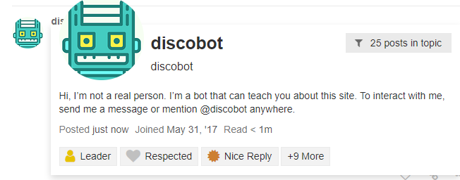
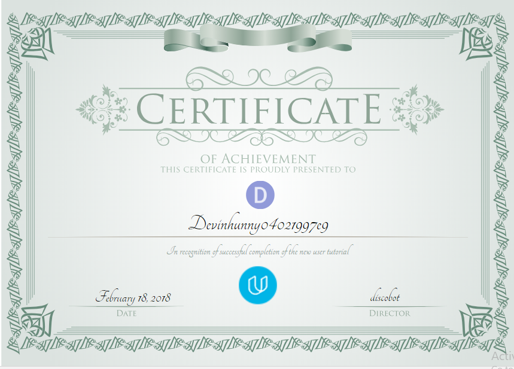
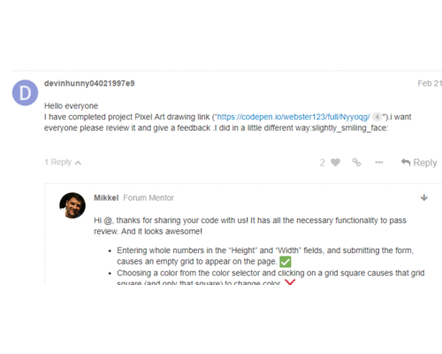
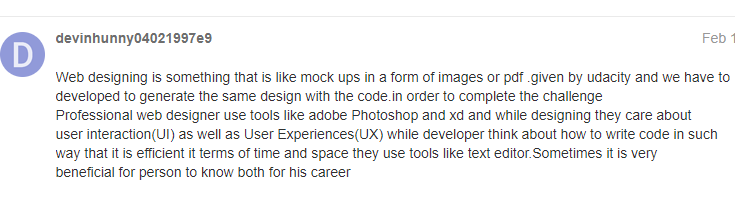
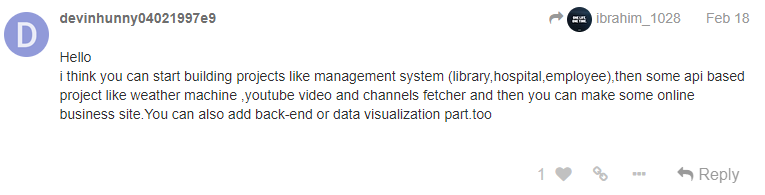
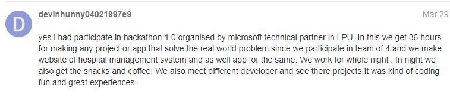

This book is all about my journey in Udacity's scholarship front-end challenge

How It starts for me?
On 7th February, In the morning, I see the status of one of my friend who also applied for the scholarship, he posted his scholarship badge immediately I open up my mail to check but I couldn't find any mail. Then after 6 hrs, I checked my promotion section, I found my scholarship, I feel very happy and posted right on a facebook.
Meeting with discobot
I completed his instruction and learn how to use the forum .He actually awarded this 
Encounter With Slack ?
 At starting I am little confused what is slack, what are channels, how to use and what its use is and all that related stuff, then things are getting clear and my involvement increased day by day & found myself little comfortable after the week.
At starting I am little confused what is slack, what are channels, how to use and what its use is and all that related stuff, then things are getting clear and my involvement increased day by day & found myself little comfortable after the week.
How udacity motivate me every time I passed the quiz 
The feedback from the forum also motivate me on my project or works. 
Some of my post from forum.   
Talks in slacks

I will like to say thanks to Udacity for giving me such great gift and blessing in the form of scholarship . This course not only teaches me technical skill but I also get to know how tech related people think and combine their ideas or talk with each other. It impacted my life in a wonderful way and play important role in shaping my future. I will also like to say thanks to all the member of slack and forum including mentor(Akshit & Mikkel) for their help, feedback, and suggestion .
While writing all this, I am feeling little nostalgic and it's like the whole journey is flashing in front my eyes.
It is the wonderful and life lasting experience.
In the end, I like to thanks Udacity once again for giving such wonderful opportunity.
Lots of love to Udacity.

Made this by using plugin